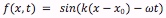
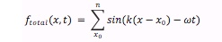

BACKGROUND
DNA ORIGAMI
The first reported use of DNA as nano material was done by Nadrian Seeman, in 1982 (1). In 1998,the same group has succeeded in making a two-dimensional sheet structure arranging multiple DNA molecules on a surface (2). In 2006, Paul Rothemund succeeded in creating "DNA origami" made from a single very long DNA strand derived from natural virus and the short DNA strands (3). The structure is made by folding the long DNA strand, with the short DNA strands acting as a staples, determining the shape as a whole. We can make various planar structures in this way.
GOLD PARTICLE
For a long time, Colloidal gold nanoparticles (AuNPs) have been used by artists to exhibit vivid colors in stained glass. These days, they are utilized in a wide range of applications due to their optical and electronics properties. Here, we summarized the properties of gold nanoparticles that are involved in this project.
Absorption
Gold nanoparticles absorb light of a specific wavelength depending on their size and density. This graph shows that UV light, a wave length from 300 to 400nm, is absorbed by gold particles.

Figure1. Absorption
Interference
The principle of interference, that is wave superposition, explains the relation of the total displacement to the individual waves. When two or more propagating waves of same type are incident at a certain point, the total displacement at that point equals to the sum of that of each individual waves.
There are two types of interference, namely, constructive interference and destructive interference. Constructive interference occurs when a crest of a wave meets the crest of another wave of the same frequency. In this case, the total magnitude at that point is the sum of the magnitude of the individual waves. Destructive interference, on the other hand, occurs when a crest of a wave meets the trough of another wave. In this case, the total displacement is equal to the difference of the two individual waves.
Wave interference can be seen when rain drops fall into a pond, for example.
We can see these phenomena in a mathematical way.
Wave equation is given by the following;

where f(x,t) is the magnitude of wave, k is wavenumber, x is the observation point, xo is the generation point of wave, ω is angular frequency, and t is time.
The total displacement at a certain point is the sum of that of the individual waves. Therefore, the total magnitude is given by;

where n is the number of wave generation points.
The Wave Nature of Light
In Young's double-slit interferometer, light that transmits through each of the slits reacts with each other to make an interference fringe on a screen. This indicates that light possesses the wave nature (wave theory of light), and therefore, light can also be described by the wave equation.
Solar Spectrum
Solar spectrum can be calculated with Planck’s law.

Where B is energy[W/m3], λ is wave length, h is Planck constant 6.626×10−34 [J*s], c is speed of light 2.998×108[m/s], kb is Boltzmann constant 1.381×10-23[J/K] and T is temperature 5800[K].
GOLD SULFUR BOND
It is known that molecules contain thiol group are able to form SH-Au bonds on gold and make self-assembled monolayer. In our experiment, we use this self assembly to attach anchor oligo DNA on surface of gold nanoparticles via SH-modification site of anchor. (4)
REFERENCE
(1)(2)
(3)
(4)Häkkinen H. The gold-sulfur interface at the nanoscale. (2012) Nature Chemistry. 22;4(6):443-55.